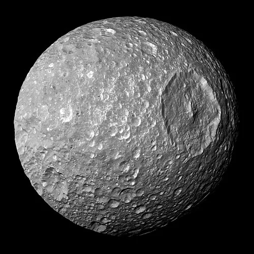

Mimas - Lua de Saturno

Introdução e História
Mimas é uma pequena lua de Saturno, descoberta em 17 de setembro de 1789 pelo astrônomo William Herschel. Faz parte do grupo das luas internas do planeta e é mais conhecida por sua aparência altamente craterada, incluindo a famosa cratera Herschel, que domina quase toda a superfície.
Devido ao seu tamanho e proximidade de Saturno, Mimas tem sido um corpo de interesse para estudar os efeitos de marés, impactos e composição de luas pequenas e geladas do Sistema Solar.
Características Físicas: Diâmetro, Massa e Órbita
Mimas tem aproximadamente 396 km de diâmetro, sendo relativamente pequeno em comparação com outras luas de Saturno.
Orbita Saturno a uma distância média de cerca de 185.520 km, completando uma volta ao redor do planeta em aproximadamente 22,6 horas terrestres.
Possui uma densidade de cerca de 1,15 g/cm³, indicando que é composto principalmente por gelo com pequenas quantidades de rocha.
Geologia
A superfície de Mimas é intensamente craterada, refletindo uma história de impactos significativos. A cratera Herschel tem cerca de 130 km de diâmetro e profundidade de 10 km, sendo responsável pelo formato peculiar que lembra a Estrela da Morte de Star Wars.
Além de Herschel, a lua apresenta inúmeras crateras menores, falhas e fraturas superficiais, mas não há evidências de atividade geológica recente. Isso indica que sua crosta permanece praticamente inalterada há bilhões de anos.
Missões Espaciais
Mimas foi observada principalmente pelas missões Voyager 1 e 2, que forneceram as primeiras imagens detalhadas da lua na década de 1980.
Mais recentemente, a missão Cassini, da NASA, passou várias vezes perto de Mimas, obtendo imagens de alta resolução e dados sobre sua gravidade, densidade e superfície. Esses dados ajudaram a compreender melhor sua composição e morfologia, além de oferecer informações sobre como pequenas luas geladas respondem a forças de maré e impactos.
Atmosfera e Exosfera
Mimas não possui uma atmosfera significativa, sendo seu entorno praticamente vazio de partículas gasosas. Qualquer exosfera é extremamente tênue e temporária, formada por partículas liberadas por impactos ou radiação solar.
Potencial de Habitabilidade
- 💧 Água Líquida: Não há evidências de água líquida, mas pesquisas sugerem a possibilidade remota de um oceano interno em alguns modelos teóricos.
- ⚡ Fonte de Energia: Energia interna extremamente limitada; qualquer atividade potencial seria mínima.
- 🧬 Ingredientes Químicos: Composição basicamente de gelo e rocha, sem evidência de química pré-biótica significativa.
Portanto, Mimas não é considerado um ambiente propício para vida, mas seu estudo contribui para entender a diversidade de luas geladas e como a água e a energia podem se comportar em corpos pequenos do Sistema Solar.
Curiosidades
A cratera Herschel, com seu tamanho desproporcional, é a característica mais icônica de Mimas.
A lua tem forma quase esférica, apesar de seu pequeno tamanho, devido à força gravitacional de Saturno e à homogeneidade de sua composição.
Mimas inspirou a famosa “Estrela da Morte” de Star Wars devido à aparência de sua grande cratera.
Origem do Nome
Mimas recebeu seu nome da mitologia grega, sendo um dos Gigantes filhos de Gaia e Urano. Segundo o mito, os Gigantes travaram uma guerra contra os deuses do Olimpo, conhecida como Gigantomaquia, na qual Mimas foi morto por Ares durante a batalha.
O nome reflete a tradição de batizar luas de Saturno com personagens mitológicos ligados a Cronos (Saturno), reforçando a ligação cultural entre mitologia e astronomia.
- NASA. Mimas Overview. Disponível em: https://solarsystem.nasa.gov/moons/saturn-moons/mimas/ . Acesso em: 26 dez. 2025.
- Wikipedia. Mimas (satélite). Disponível em: https://pt.wikipedia.org/wiki/Mimas_(satélite) . Acesso em: 26 dez. 2025.